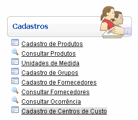
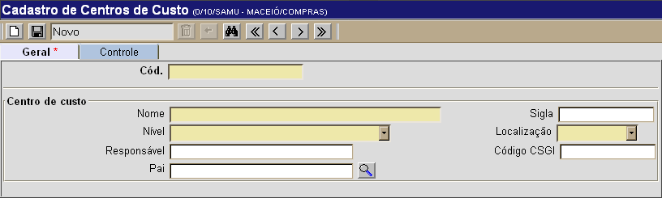
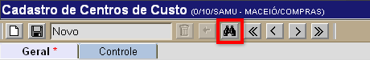
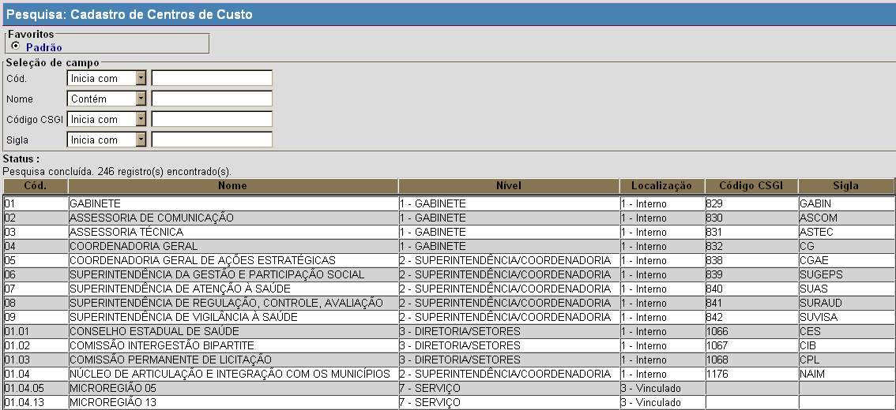

Cadastro de Centros de Custo [ Voltar ]
Utilize este formulário para cadastrar e editar centros de custo. Para acessá-lo, vá ao menu "Cadastros" na
página inicial e clique em "Cadastro
de Centros de Custo".

Após clicar no formulário, o sistema abrirá
a seguinte tela:

Selecione uma das duas opções abaixo para
ver o guia passo-a-passo:
Cadastrar novo centro de custo
Editar centro de custo já cadastrado
Cadastrar novo centro de custo
1°
Passo: preencha as informações sobre o centro de custo que deseja
cadastrar. Os campos em
amarelo são obrigatórios.
- Cód. Especifique neste campo o código para o
centro de custo que deseja criar.
- Nome. Informe aqui o nome do novo centro de
custo.
- Sigla. Especifique a sigla identificadora deste centro de custo.
- Nível.
Selecione o nível adequado a partir da lista de opções
disponíveis:
- Gabinete;
- Superintendência/Coordenadoria;
- Diretoria/Setores;
- Gerência/Seções;
- Serviço/Coordenadoria;
- Coordenadoria administrativa;
- Serviço; e
- Seções.
- Localização. Informe se o centro de custo é Interno ou Vinculado.
- Responsável. Informe aqui o nome do responsável pelo centro de custo.
- Código CSGI. Deposite neste campo
o código da CSGI.
- Pai.
Clique no botão
 [Procurar]
para selecionaro centro de custo em posição hierarquicamente superior. [Procurar]
para selecionaro centro de custo em posição hierarquicamente superior.
2° Passo: clique no botão  para concluir o cadastro do
centro de custo. para concluir o cadastro do
centro de custo.
Editar centro de custo
já cadastrado
Para editar os detalhes de um centro de custo
já cadastrado, siga os passos abaixo.
1º Passo: para localizar o centro de custo que deseja
abrir, clique no botão  da
barra de
botões. da
barra de
botões.

Uma tela de pesquisa de centros de custo será exibida:

Utilize os filtros disponíveis para facilitar a localização do centro de custo que deseja abrir.
- Cód. Digite aqui as iniciais do código do centro de custo para que o sistema retorne os resultados correspondentes.
- Nome. Digite aqui uma palavra-chave do nome do centro de custo para que os resultados
exibam todos registros cujo nome contém a palavra digitada.
- Código CSGI. Digite aqui as iniciais do código CSGI para que o sistema retorne os centros correspondentes.
- Sigla. Digite aqui as iniciais da sigla identificadora deste centro de custo.
Assim que localizar o centro de custo em questão, selecione-o com um clique. Em seguida, o seu
cadastro será na tela "Cadastro de Centros de Custo". Para mais informações sobre outros recursos
e
funcionalidades da pesquisa, favor ver o manual Introdução
ao Sistema.
2° Passo: se necessário, edite as
informações do centro de custo.
- Nome. Informe aqui o nome do novo centro de
custo.
- Sigla. Especifique a sigla identificadora deste centro de custo.
- Nível.
Selecione o nível adequado a partir da lista de opções
disponíveis:
- Gabinete;
- Superintendência/Coordenadoria;
- Diretoria/Setores;
- Gerência/Seções;
- Serviço/Coordenadoria;
- Coordenadoria administrativa;
- Serviço; e
- Seções.
- Localização. Informe se o centro de custo é Interno ou Vinculado.
- Responsável. Informe aqui o nome do responsável pelo centro de custo.
- Código CSGI. Deposite neste campo
o código da CSGI.
- Pai.
Clique no botão [Procurar]
para selecionaro centro de custo em posição hierarquicamente superior.
3° Passo: clique no botão para salvar as alterações realizadas no cadastro.
Ir para o topo da
página
|